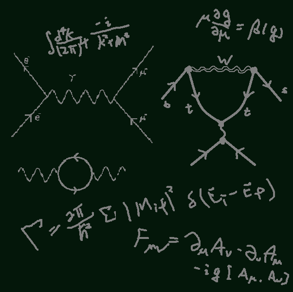
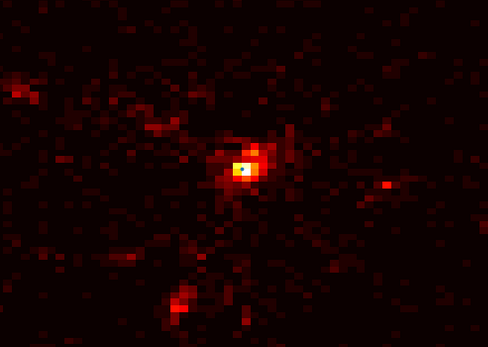
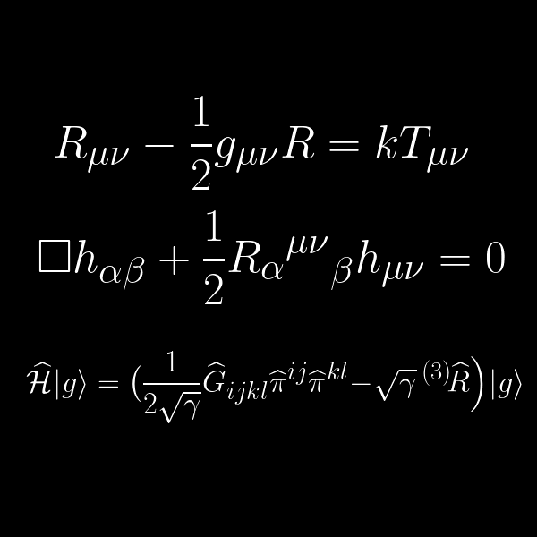
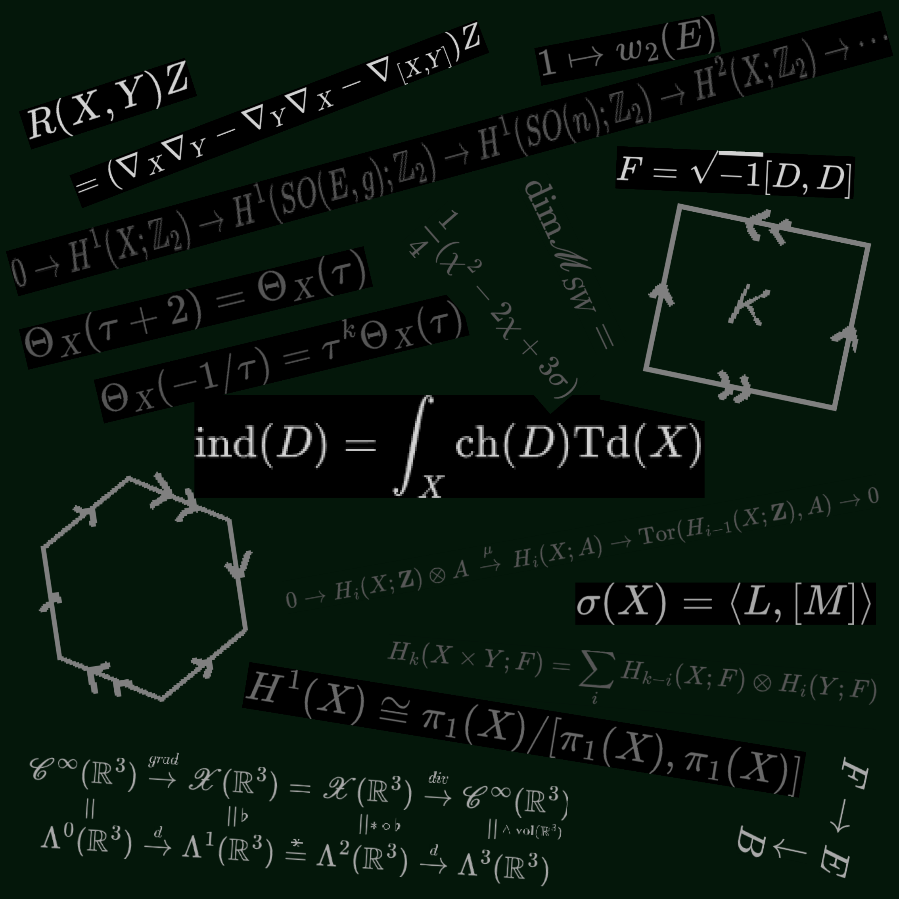

Research Areas

Theoretical Particle Physics
My current reseach on Particles Physics is mainly within SUSY Phenomenology.
I am studying the Electroweakino sector of MSSM and their signals in LHC.
While I am also interested in general theoretical frameworks, e.g. GUT scale and String theory.

Cosmology
I work primarily on the Large-Scale Structure of the universe (LSS).
My currect focus includes detailed Halo models and Clustering history.
While I am also interested in early universe theories, e.g. Inflationary models.

Classical and Quantum Gravity
Althoght I am not actively studying graviational Physics,
I myself have done research on modified gravity theories.
My personal interest is on how to quantize gravity despite the inconsistencies in causally different matrics.

Mathematical Physics
Whether it is mathematics applied to physical models, or physics approached with mathematical rigour — it is their intersection that truly captivates me.
I spend much time on advacned topics in mathematics,
including Lie group/algebra, Algebraic Topology, and Geometric Analysis.
Though I am not actively doing research on any topic of it at this point,
I do hope that I would have the change to use them in the future.
Publications
Publications forthcoming — check back soon.